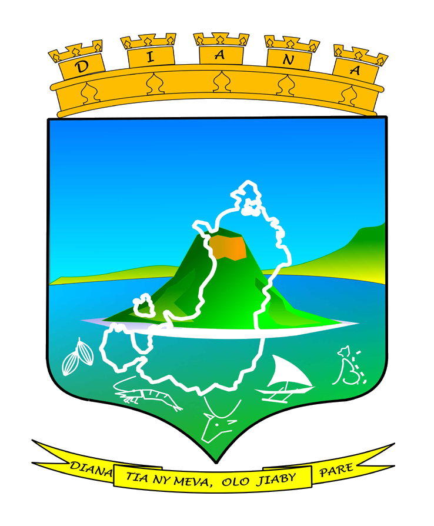
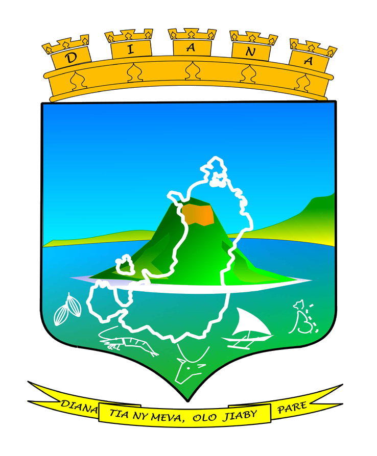

Bienvenue sur le site web officiel de FIMPAMA, une communauté étudiante florissante et vibrante née en 1997 au cœur de l'Université de Mahajanga. Notre association étudiante est bien plus qu'un simple regroupement d'étudiants - c'est un foyer pour l'innovation, l'engagement et l'amitié.

Qui Sommes-Nous?
FIMPAMA, pour de Fikambanana Mpianatra avy Avatra andrefan'i Antsiranana eto Mahajanga, c'est avant tout
une famille
d'étudiants passionnés qui aspirent à créer un impact positif dans leur environnement universitaire et
au-delà. Depuis
nos modestes debuts il y a plus de 47 ans, FIMPAMA a évolué pour devenir une force motrice au sein de
l'Université de
Mahajanga. Notre histoire est marquée par des moments de succès, de croissance et d'impact positif,
témoignant de notre
dévouement envers nos membres et notre communauté.